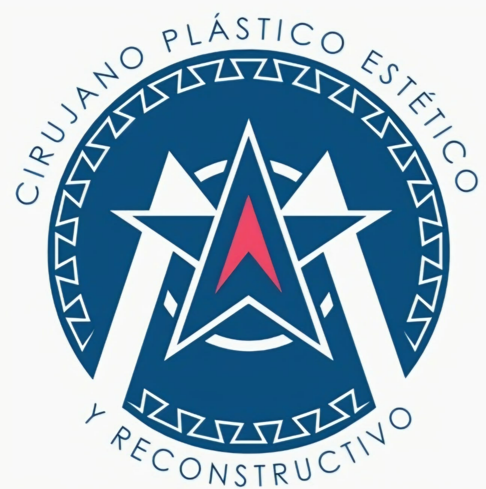
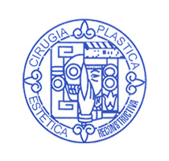
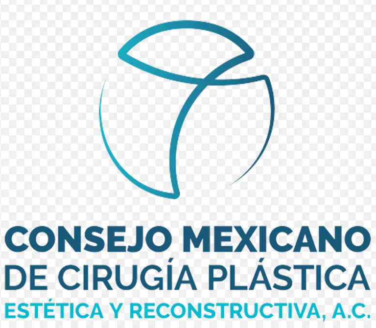

Experiencia
en la práctica médica.
—años de experiencia
Cifra pendiente de confirmar.
Conoce su trayectoriaConoce al Dr. Tony Bustos y encuentra información
para dar el siguiente paso en tu cuidado.
Formación y experiencia. Un espacio para conocer la preparación académica y la trayectoria profesional del Dr. Tony Bustos.
Credenciales profesionales. Consulta aquí su cédula, certificaciones e información sobre AMCPER y CMCPER cuando estén confirmadas.
Cifra pendiente de confirmar.
Conoce su trayectoria


Resuelve tus dudas antes de tu consulta
con el Dr. Tony Bustos.
Puedes compartir tus objetivos y dudas con el Dr. Tony Bustos, y preguntar por las opciones, sus alcances, riesgos y cuidados. La consulta es el espacio para recibir información sobre tu caso antes de tomar una decisión.
Solicita al consultorio las indicaciones específicas para tu procedimiento y confirma cualquier duda con el Dr. Tony Bustos. La preparación se define de manera individual; esta página no sustituye esas instrucciones.
Pregunta durante la valoración por el tiempo estimado de recuperación, el seguimiento y el regreso a tus actividades. No se establece un plazo único aquí: necesitarás una orientación específica para el procedimiento y tu situación.
Consulta la ubicación en Hospital San Ángel Inn Universidad y el horario de atención, de lunes a viernes de 9:00 a. m. a 6:00 p. m., en la sección de contacto. El teléfono mostrado es provisional; la agenda telefónica estará disponible cuando se confirme el número del consultorio.
Ver información de contactoDR. TONY BUSTOS
Da el siguiente paso.
Conoce dónde encontrarnos.
La agenda telefónica estará disponible cuando se confirme el número del consultorio.